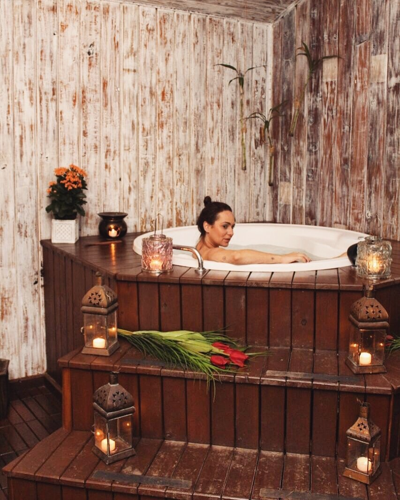

Nosso serviço de SPA é considerado uma das melhores massagens do mundo.
Todos conhecem o poder relaxante de uma boa massagem, mas sabia que além daquela agradável sensação de bem-estar, massagens relaxantes contribuem para sua saúde?
Dentre as diferentes técnicas, as massagens relaxantes, propiciam ao corpo vários benefícios, como a melhora da circulação sanguínea, a eliminação de toxinas, a redução dos nível de cortisol (hormônio do stress) e o aumento da oxitocina, hormônio que age diretamente nas sensações de contentamento e confiança. Além disso, aumentam os linfócitos (glóbulos brancos) que fazem parte do sistema imunológico.